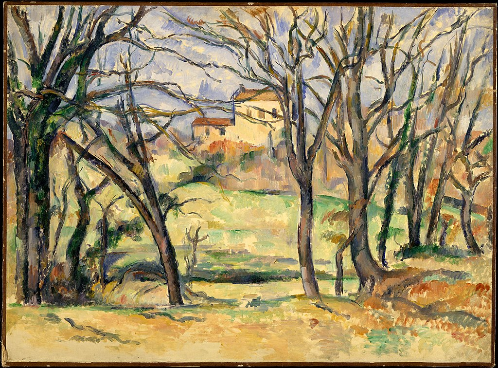

<head>
<meta charset="UTF-8" />
<meta name="keywords" content="drawing, painting" />
<meta name="description" content="drawings by Sunjy" />
<title>Sunjy</title>
<link rel="shortcut icon" type="image/x-icon" href="../../mImages/mCommon/favicon.ico" media="screen" />
<link rel="stylesheet" type="text/css" href="../../mCsses/mCommon/mCssA.css" />
<link rel="stylesheet" type="text/css" href="../../mCsses/mCommon/mCssB.css" />
<link rel="stylesheet" type="text/css" href="../../mCsses/mCommon/mCssC.css" />
<link rel="stylesheet" type="text/css" href="../../mCsses/mCommon/mCssD.css" />
<link rel="stylesheet" type="text/css" href="../../mCsses/mContent/mCssA.css" />
<link rel="stylesheet" type="text/css" href="../../mCsses/mContent/mCssB.css" />
<link rel="stylesheet" type="text/css" href="../../mCsses/mContent/mCssC.css" />
<link rel="stylesheet" type="text/css" href="../../mCsses/mContent/mCssD.css" />
</head>
<script type="text/javascript" src="../../mScripts/mContent/mContentAA.js" /></script>
<script type="text/javascript" src="../../mScripts/mContent/mContentAB.js" /></script>
<script type="text/javascript" src="../../mScripts/mContent/mContentAC.js" /></script>
<script type="text/javascript" src="../../mScripts/mContent/mContentAD.js" /></script>
<script type="text/javascript"></script> 
<script type="text/javascript">
document.write('<div class="mImgAbsolute"></div>');
/*
document.write('<p class="mFontSizeBColor" />From a white paper...</p>');
document.write('<table class="center"><tr><td>');
document.write('');
document.write('</td></tr></table>');
*/
</script>


<script type="text/javascript">
document.write('<p class="mFontSizeBColor" />Trees and Houses Near the Jas de Bouffan</p>');
document.write('<p class="mFontSizeSColor" />“Trees and Houses Near the Jas de Bouffan” by Paul Cézanne was painted “sur le motif,” directly from nature. Cézanne’s brush marks are lean and articulated, his palette of yellows and greens are simply expressed.<br><br>Cézanne experimented with the spatial relationships in nature, working from life or memory. The trees appear as a frieze against the recessive color, applied as though in watercolor, but actually in oil.<br><br>About the time of this painting, in 1886, there was a turning point for Cézanne when he married Hortense; he was 47. In that year also, Cézanne’s father died, leaving him the estate of Bastide du Jas de Bouffan <br><br>By 1888 the family was in the former manor, Jas de Bouffan, a substantial house and grounds with outbuildings, which afforded a new-found comfort. <br></p>');
document.write('<table class="center" /><tr><td>');
document.write('<br>Cézanne experimented with the spatial relationships in nature, working from life or memory. The trees appear as a frieze against the recessive color, applied as though in watercolor, but actually in oil.<br><br>About the time of this painting, in 1886, there was a turning point for Cézanne when he married Hortense; he was 47. In that year also, Cézanne’s father died, leaving him the estate of Bastide du Jas de Bouffan <br><br>By 1888 the family was in the former manor, Jas de Bouffan, a substantial house and grounds with outbuildings, which afforded a new-found comfort. <br>" />');
document.write('</td></tr></table>');
</script>


